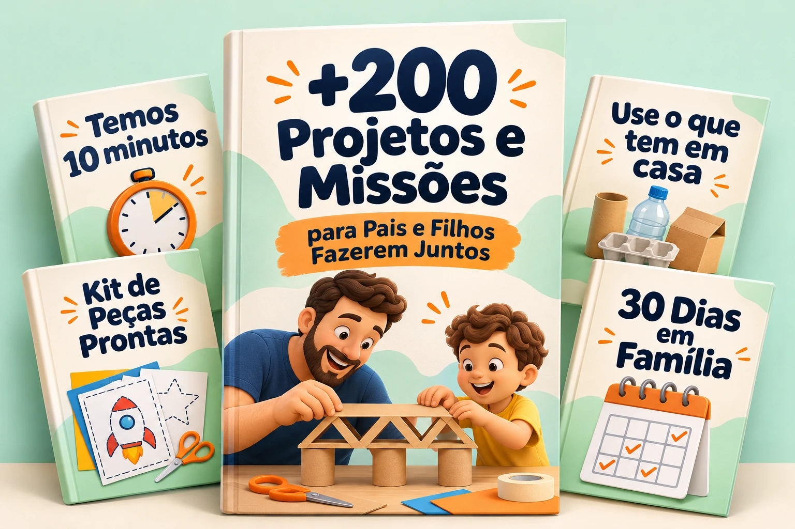
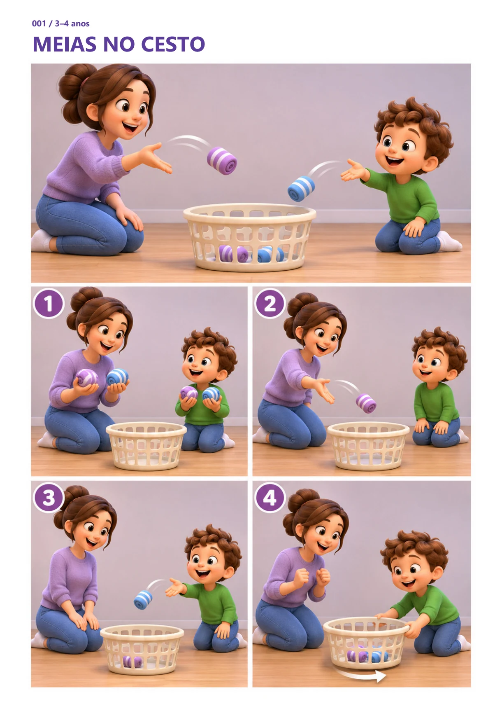
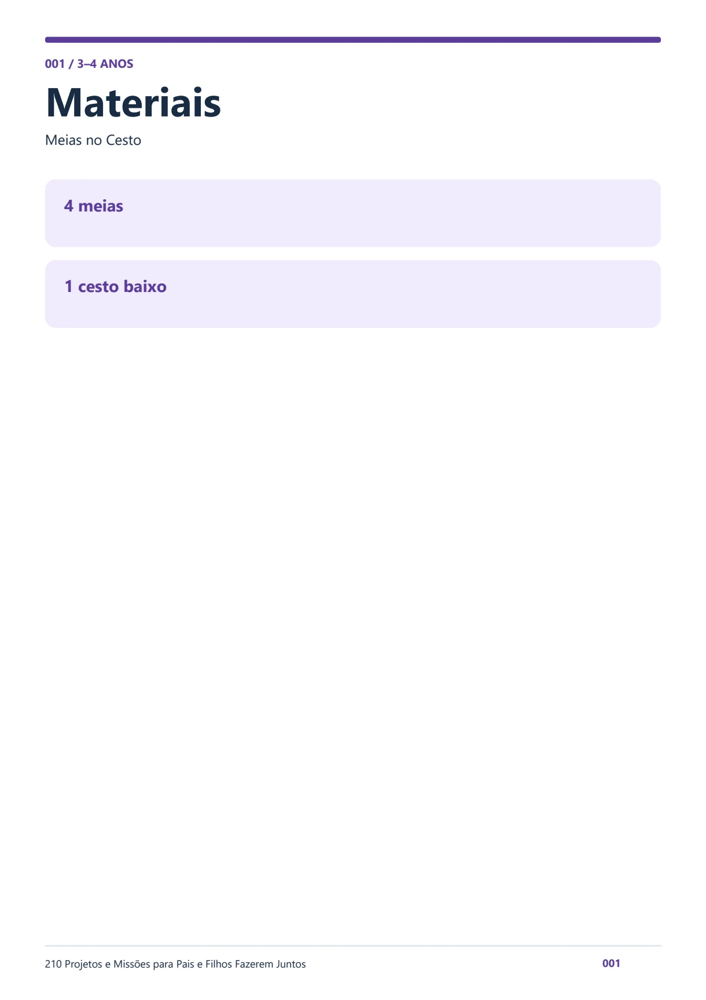
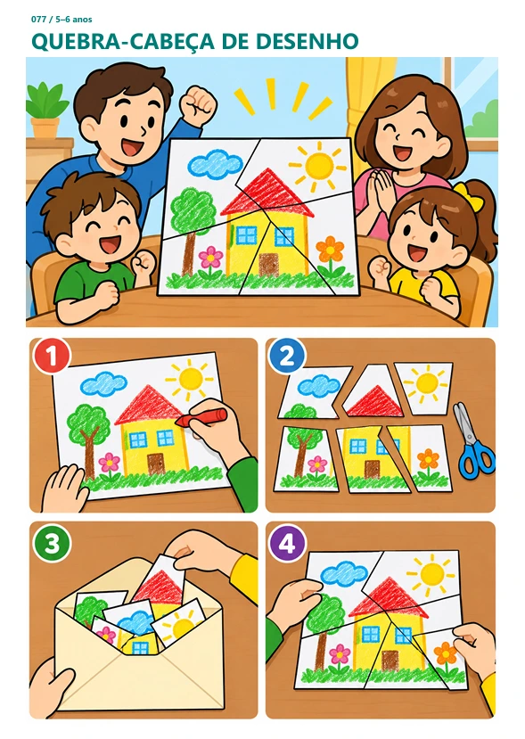
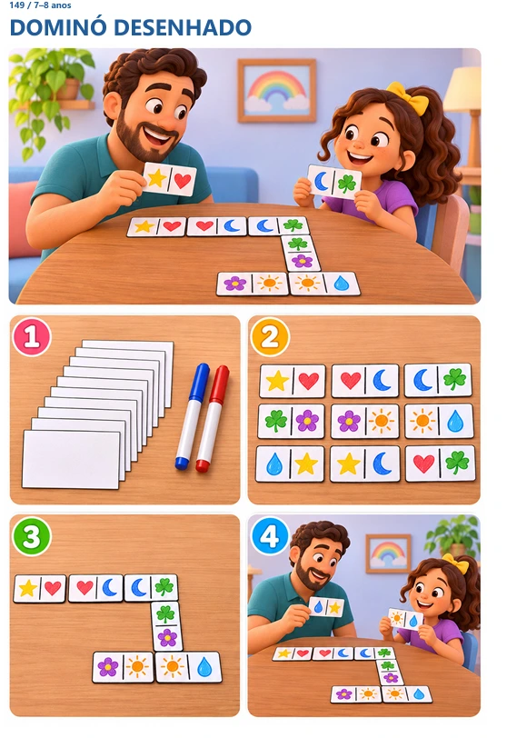
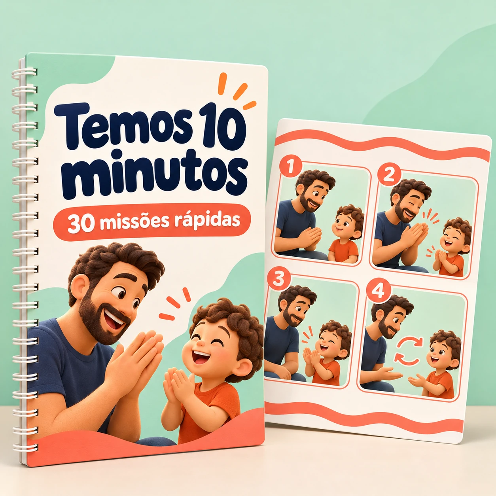
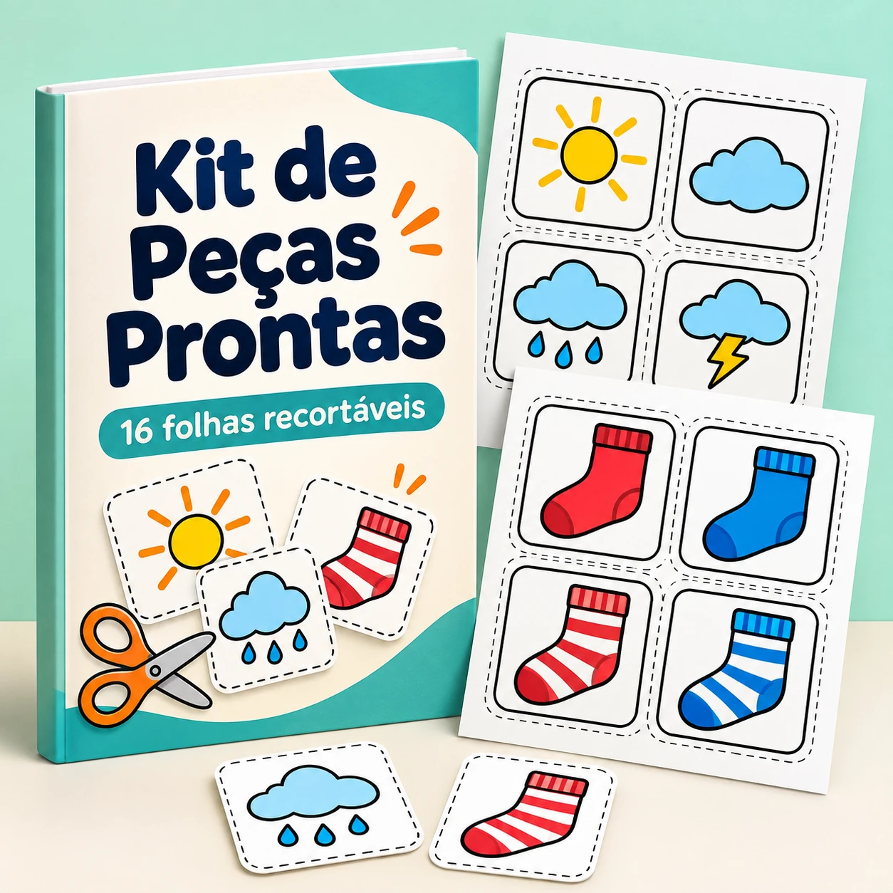
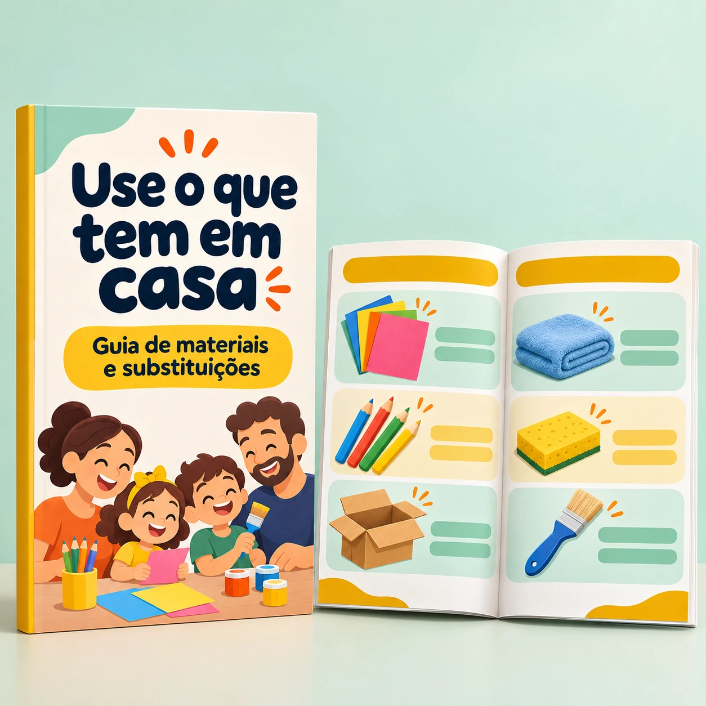
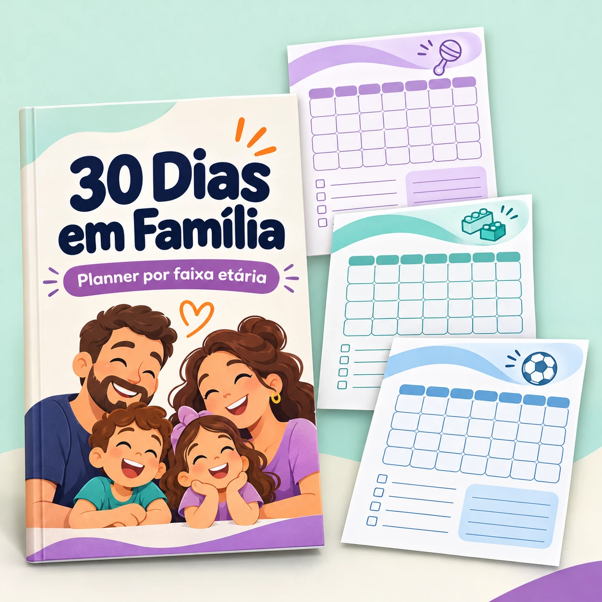
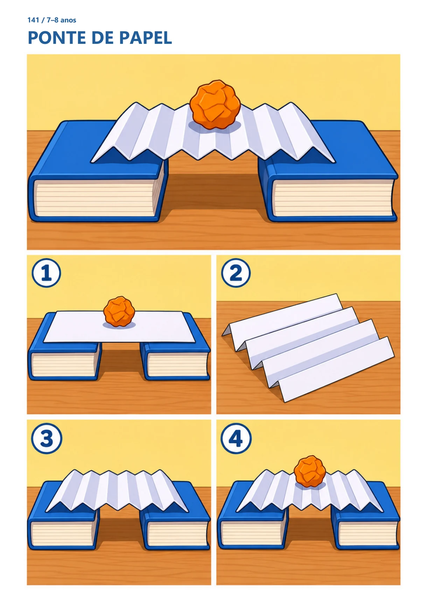

3–4 anos
Meias no Cesto
Adulto e criança jogam meias enroladas. Depois, a criança escolhe onde pôr o cesto na próxima rodada.
Abrir ficha+200 Projetos e Missões para Pais e Filhos Fazerem Juntos
São +200 projetos e missões para fazerem juntos, dos 3 aos 8 anos. Escolham uma ficha pela idade, vejam a atividade em imagens e confiram o que separar e como fazer.
Ver os planos Ver uma atividade por dentroKits a partir de R$ 10,00 · Material digital em PDF

Uma ficha do caderno
Em Meias no Cesto (3–4 anos), vocês se revezam nos arremessos. A criança escolhe se quer mudar a distância.


Separem 4 meias e 1 cesto baixo. Primeiro passo: coloque o cesto no chão e enrole as meias, uma por vez.
Ampliar as duas páginasVocês têm um tempo livre e querem inventar algo. A primeira ideia salva pede materiais que vocês não têm à mão. A segunda mostra o resultado e deixa a dúvida: por onde começar?
Com o caderno, vocês escolhem pela idade e conferem o que separar antes de começar. É também uma opção para brincar longe das telas.
Veja por dentro
Abra uma ficha para ver a prancha e a página de materiais.
Adulto e criança jogam meias enroladas. Depois, a criança escolhe onde pôr o cesto na próxima rodada.
Abrir ficha
Façam um desenho, recortem em peças e desafiem a família a montar a figura de novo.
Abrir ficha
Desenhem símbolos nas peças de papel e joguem juntos, unindo as pontas com desenhos iguais.
Abrir fichaUm caderno digital com +200 atividades ilustradas, dividido em três faixas etárias.
Tem arte, construções, movimento, histórias e descobertas para fazer em família.
Veja o nome da atividade e acompanhe as imagens numeradas na ordem em que vocês vão fazer.
Na página seguinte, confira os itens e as quantidades e leia o passo a passo por escrito.
Para fazer em família
Às vezes o adulto joga junto. Em outras atividades, a criança conduz a rodada. Quando a proposta é construir algo, os dois montam, testam e descobrem o que funciona.
Inclusos no Kit Completo

30 missões rápidas, dez por faixa etária. Cada uma tem uma página ilustrada e outra com materiais e instruções.
Ver Espelho de Bichos ↗R$ 27,00Grátis no Kit Completo

16 folhas A4 com brincadeiras independentes para imprimir e recortar. Em Detetive das Meias, vocês fazem perguntas para descobrir qual cartão o outro escolheu.
Ver Detetive das Meias ↗R$ 25,00Grátis no Kit Completo

Um guia de 6 páginas com propostas próprias, sugestões de substituição e testes simples para escolher os materiais.
Ver uma página do guia ↗R$ 20,00Grátis no Kit Completo

Planner de 18 páginas, dividido em três faixas etárias. Além da versão de oito convites, há quatro variações: uma missão por dia, encontros no meio da semana, projetos de fim de semana e semana leve com projeto no sábado.
Ver um calendário ↗R$ 39,90Grátis no Kit Completo
Escolha seu kit
O Kit Completo inclui o caderno e quatro bônus: 30 missões rápidas, folhas recortáveis, guia de materiais e planners por idade.
Conheça os quatro bônusCaderno principal com +200 atividades.
R$ 10,00
🎁 +200 atividades e 4 bônus
O mesmo caderno com quatro bônus.
R$ 19,90
Por R$ 9,90 a mais, você leva os quatro bônus.
Você tem 7 dias após a compra para conhecer o material. Se decidir pedir o reembolso, faça a solicitação dentro desse prazo.

Amostra do caderno
Vejam os quatro passos ilustrados e confiram o que separar para testar a ponte juntos.
Abrir ficha e materiaisPara crianças de 3 a 8 anos. O caderno está dividido em 3–4, 5–6 e 7–8 anos.
Você pode consultar o caderno no celular e imprimir só as páginas que quiser. As folhas do Kit de Peças Prontas foram feitas para imprimir em A4 e recortar.
Depende da atividade. Há propostas com meias e um cesto, papel colorido e cola, ou folhas A4 e livros. Cada ficha traz sua lista com as quantidades.
O adulto pode jogar junto, seguir as instruções da criança ou ajudá-la a montar e testar algo. Em etapas que pedem cuidado, como recortar, o adulto acompanha.
Sim. O caderno e os bônus são arquivos digitais em PDF.
O Kit Básico traz o caderno com +200 atividades. O Kit Completo traz o mesmo caderno mais quatro bônus: Temos 10 minutos, Kit de Peças Prontas, Use o que tem em casa e 30 Dias em Família.
Uma brincadeira com meias, um quebra-cabeça de desenho ou um dominó feito por vocês. Comecem pela atividade que dá vontade de fazer hoje.
Quero escolher meu kit